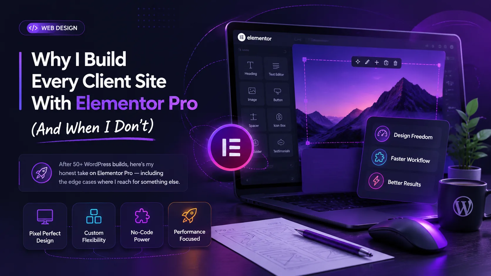

After 50+ WordPress sites built for local service businesses, e-commerce stores, and professional portfolios, I've worked with most of the major page builders on the market. I've tried Beaver Builder, Divi, Bricks, and Gutenberg blocks. I keep coming back to Elementor Pro — and I want to explain exactly why, including the honest downsides, and the situations where I choose something else.
Why Elementor Pro Is My Default
The simplest answer is: my clients can use it. When I hand over a finished site, I need the client to be able to update their own homepage text, swap out a team photo, or add a new service without calling me. Elementor Pro's visual editor is the most intuitive page-building interface I've found for non-technical users. They can see exactly what they're changing in real time.
Beyond client handoff, the Pro tier unlocks features that I'd otherwise need four separate plugins to replicate:
- Theme Builder — custom headers, footers, single post templates, and archive templates. Build your entire site without touching PHP.
- WooCommerce Builder — design custom product pages, shop pages, and checkout flows visually. Indispensable for any e-commerce project.
- Form Builder — multi-step forms, conditional logic, and native integrations with Mailchimp, ActiveCampaign, and Zapier. Replaces Contact Form 7 + a CRM bridge plugin in one widget.
- Popup Builder — exit-intent popups, announcement bars, and lead capture overlays with granular display conditions. Worth the subscription on its own for lead-generation sites.
- Dynamic Content — pull in ACF fields, custom post type data, or WooCommerce product attributes and display them anywhere on any template.
The Real Downsides (I Won't Pretend They Don't Exist)
I said this was an honest review. Here are the actual friction points I hit regularly with Elementor Pro:
Page speed overhead
Elementor loads its own CSS and JS on every page — typically 150–250KB of assets that your theme doesn't need. On a shared hosting plan without caching, this is noticeable. My fix: WP Rocket + Cloudflare CDN + Elementor's "Improved Asset Loading" setting. On a properly configured server, the difference is marginal. On budget hosting, it's real.
Lock-in
If you deactivate Elementor, your content becomes a sea of shortcode. Your pages don't break completely — the text is still there — but all your styling and layout disappears. This is the fundamental tradeoff of any page builder. I mitigate it by documenting the design system and keeping theme-level styles clean, but it's worth understanding before you commit.
Editor performance on complex pages
Pages with 80+ sections, parallax animations, and nested containers can start to feel sluggish in the editor — especially on mid-range hardware. I haven't had this happen on sites with under 40 sections, but for large e-commerce landing pages, the editor can lag. Save frequently.
When I Don't Use Elementor Pro
There are three specific scenarios where I reach for something else:
1. Pure blog or content-heavy sites
If a client primarily publishes long-form articles or documentation, the Gutenberg block editor is genuinely better. The writing experience is cleaner, the output is lighter, and the site will have significantly better page speed out of the box. I use Elementor to build the theme templates (header, footer, single post layout) and Gutenberg for the content itself — the best of both.
2. Highly custom or developer-built themes
When a project requires a truly bespoke frontend — custom post type feeds with unusual layout requirements, complex JavaScript interactions, or a design that pushes against the grid — I build the theme in PHP/HTML/CSS and use Elementor only for content sections where the client needs editing access. Or I skip it entirely and use ACF with custom templates.
3. Very simple brochure sites with tight budgets
For a 3-page local business site that the client will never edit themselves, the overhead of Elementor (plugin subscription, editor learning curve, speed optimisation) isn't always justified. A well-coded static HTML page or a lightweight block theme like Kadence or Astra with just the block editor can be faster to build and faster to load.
"The best page builder is the one that solves your client's actual problem — not the one with the most features. Elementor Pro solves 90% of my clients' problems exceptionally well."
My Elementor Pro Stack
After 50+ builds, this is the configuration I start with on every new Elementor Pro project:
- Theme: Hello Elementor (free, minimal, built for Elementor) or GeneratePress
- Caching: WP Rocket (page cache, asset optimisation, CDN integration)
- CDN: Cloudflare free tier
- Images: ShortPixel (WebP conversion, lazy load)
- SEO: Rank Math Pro
- Security: Wordfence or Solid Security
- Backups: UpdraftPlus (daily, off-site to Google Drive)
- Forms: Elementor Pro Forms (replaces Contact Form 7 + SMTP plugin)
With this stack, I consistently achieve PageSpeed scores of 85–95 on desktop and 75–88 on mobile for standard service business sites — without any custom performance engineering. The Hello theme is deliberately lean, WP Rocket handles the heavy lifting, and Cloudflare absorbs most of the static asset requests.